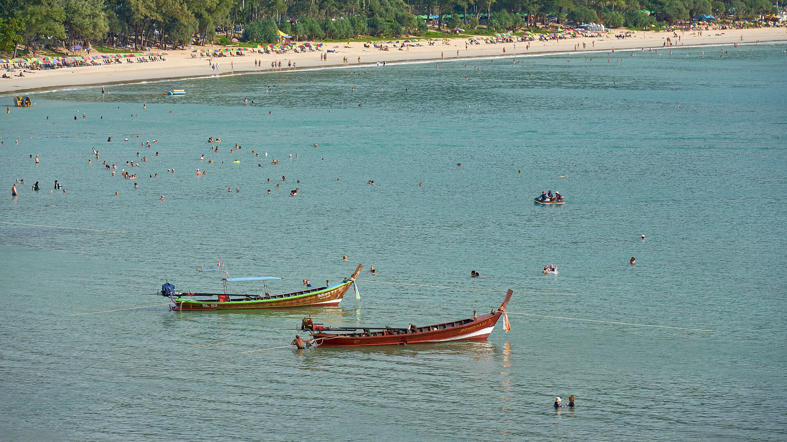
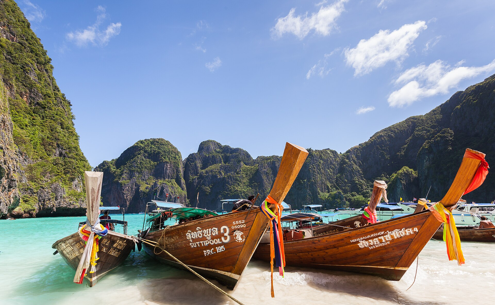
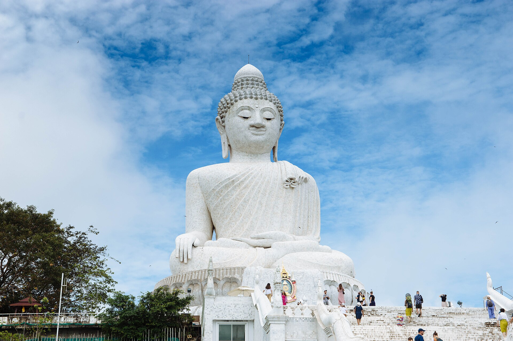
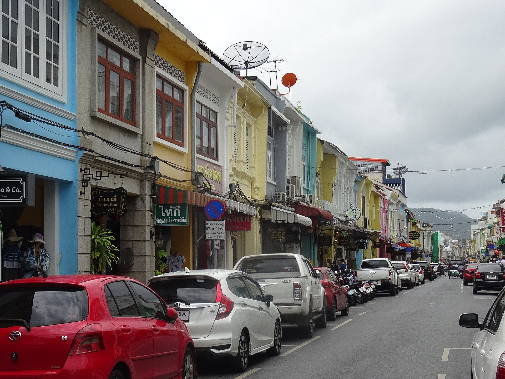

SpiceJet · non-stop
₹41,734 return
Out 10:30 → 16:40 (24 Dec) · Back 17:40 → 21:00 (27 Dec)
Lands in daylight, leaves late enough that the last day is still a beach day. The only non-stop under ₹50k.

Trip research · Christmas 2026
Three nights on Thailand’s Andaman coast, flying non-stop from Delhi on Christmas Eve and back on the 27th. Every price below was pulled from a live search on 17 October 2026 — not a brochure figure.
Four Thai options were priced for the same dates. The deciding factor for a three-night trip is not the destination — it is how much of the trip you lose to flying.
| Option | Best fare found (return, per person) | Fastest routing | Verdict |
|---|---|---|---|
| Phuket (HKT)Chosen | ₹41,734 | Non-stop, 4h 50m | Beach Christmas, shortest travel, one hotel for all three nights. |
| Bangkok (BKK) | ₹40,090 | Non-stop, 4h 05m | Cheapest and easiest, but a city break — no beach, and Bangkok has had serious flooding this season. |
| Krabi (KBV) | ₹55,830 | 1 stop, 10h+ | No non-stop from Delhi; you lose most of day one in transit. |
| Bangkok + Phuket split | ₹55,000+ | Non-stop + domestic hop | Two hotels, one wasted half-day packing, and a domestic flight on peak dates. |
Delhi → Phuket, 24–27 December 2026, economy, one adult, round trip including taxes. Source: Google Flights, captured 17 Oct 2026.
₹41,734 return
Out 10:30 → 16:40 (24 Dec) · Back 17:40 → 21:00 (27 Dec)
Lands in daylight, leaves late enough that the last day is still a beach day. The only non-stop under ₹50k.
₹57,640 return
Out 13:40 → 19:45 (24 Dec) · Back 07:35 → 11:00 (27 Dec)
Worth the ₹15,900 if you would rather not gamble on a low-cost carrier over Christmas week — but the 07:35 return costs you the final morning.
| Fare | Airline | Out | Stops | Duration | Note |
|---|---|---|---|---|---|
| ₹41,734 | SpiceJet | 10:30 → 16:40 | Non-stop | 4h 50m | Cheapest overall |
| ₹49,129 | SpiceJet | 19:00 → 16:45+1 | 1 stop · BOM | 20h 15m | 13h layover in Mumbai |
| ₹57,640 | Air India | 13:40 → 19:45 | Non-stop | 4h 35m | Best full-service non-stop |
| ₹58,918 | Thai AirAsia X | 20:55 → 07:50+1 | 1 stop · DMK | 9h 25m | Overnight, arrives tired |
| ₹69,196 | THAI / EVA | 00:20 → 09:10 | 1 stop · BKK | 7h 20m | Good if you must fly THAI |
| ₹75,012 | Air India | 00:25 → 06:35 | Non-stop | 4h 40m | Red-eye premium |
Three nights, two adults, 24–27 December. Prices are totals for the whole stay, not per night. Source: Booking.com, captured 17 Oct 2026.

Two beaches (Kata and quieter Kata Noi), walkable restaurants, 15 minutes to the Big Buddha and 25 to Promthep Cape. Calmer than Patong, and the right base for a 3-day trip.
Cheapest beds (from ₹12,791 for three nights) and the Old Town on your doorstep, but a 30–40 minute drive to any beach. Only worth it if you are treating this as a food-and-culture trip.
Nightlife and the busiest beach; also the most expensive and loudest. Skip it for a Christmas trip unless the point of the trip is Bangla Road.
| Stay | 3 nights | Guest score | Why |
|---|---|---|---|
| Sabai Sabai Hotel | ₹23,024 | 9.1 | Cheapest well-rated option, small property |
| Kata Sea Blue | ₹27,757 | 8.4 | Budget, close to the sand |
| Dome Kata Resort | ₹36,154 | 8.6 | The value pick — pool, 10 min walk to the beach |
| Alura Boutique | ₹44,207 | 9.4 | Best-rated small hotel in the set |
| Casa De Coral | ₹49,118 | 9.1 | Boutique, strong reviews |
| The Palmery Resort | ₹61,884 | 8.7 | Resort feel, good for couples |
| Aurico Kata Resort & Spa | ₹63,644 | 9.0 | Big pool, spa, walk to beach |
| Novotel Phuket Kata Avista | ₹84,081 | 8.0 | International brand, sea-view rooms |
Built around the SpiceJet timings, which give you two full days plus a beach morning. Everything is within 40 minutes of Kata, so no day is wasted driving.
What is actually worth the time on a three-day trip, and what each one costs.

3,390 THB per adult · ~₹9,300
Full-day speedboat: Maya Bay, Pileh Lagoon, Loh Samah, Viking Cave, Phi Phi Don and Bamboo Island. Includes hotel transfer, lunch, snorkelling gear and insurance. National park fee of 400 THB is extra, in cash on the day.
07:00–08:00 pickup, back about 16:30 · book ahead for Christmas Day

Free donations welcome
A 45-metre white marble Buddha on the highest hill in the south, with a 360° view over Chalong Bay and Kata. Go before 11:00 — it is exposed, and there is no shade on the platform.
6:00–18:30 daily · 30 min from Kata · cover shoulders and knees
Free parking ~50 THB
The southern tip of the island and the standard sunset shot. Busy but genuinely spectacular; walk past the lighthouse for the quieter rail.
Sunset ~18:15 in late December · arrive 17:15

Free dinner ~₹1,500 for two
Tin-mining money built these Sino-Portuguese shophouses. Thalang Road, Soi Romanee and the cafés around Dibuk Road are the walk. The Sunday walking street runs 16:00–22:00 — which this itinerary misses by one day.
Best 17:00–22:00 · 35 min from Kata
Free donations
The largest and most visited temple on the island, three storeys of murals and a revered relic. Ten minutes from the Big Buddha, so it pairs naturally.
8:00–17:00 · 20 min from Kata
Free sunbeds ~200 THB
The reason to stay here. Kata is the long curve with the island view; Kata Noi, over the headland, is smaller and quieter. Watch the flags — there are real rip currents in December.
Walk from most Kata hotels
For two people, three nights, everything included except shopping. Two versions: lean, and comfortable. Baht converted at ₹2.75 per 1 THB.
| Line | Lean | Comfortable |
|---|---|---|
| Flights, 2 × return (SpiceJet non-stop) | ₹83,468 | ₹83,468 |
| Hotel, 3 nights in Kata | ₹23,024 Sabai Sabai | ₹63,644 Aurico Kata |
| Phi Phi day trip, 2 adults | ₹18,645 | ₹18,645 |
| National park fees, 2 × 400 THB | ₹2,200 | ₹2,200 |
| Airport transfers, both ways | ₹6,600 | ₹6,600 |
| Food and drink, 3 days | ₹12,000 | ₹24,000 |
| Local transport, massages, extras | ₹5,000 | ₹12,000 |
| Total for two | ₹1,50,937 | ₹2,10,557 |
| Per person | ₹75,469 | ₹1,05,279 |
Everything priced here came from one of these, on 17 October 2026.